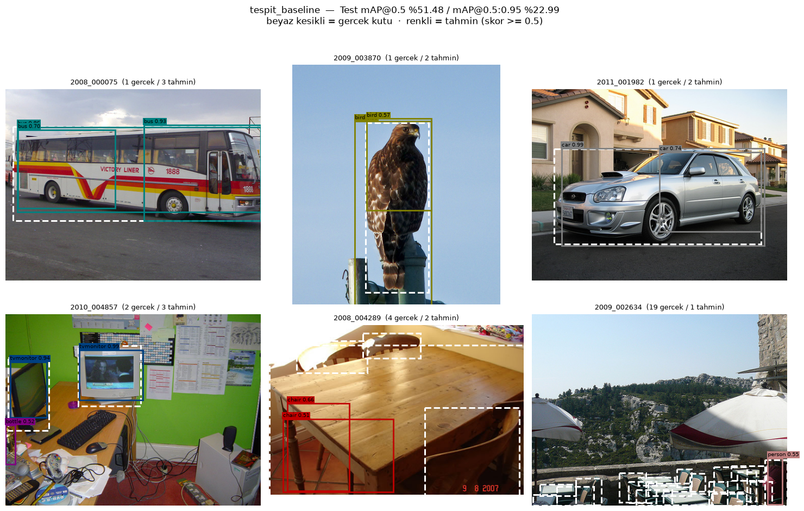
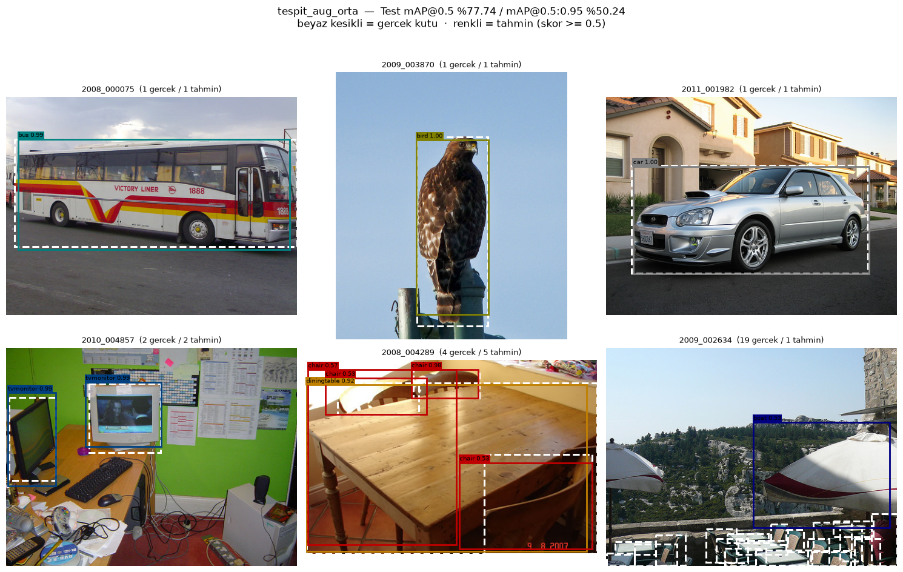
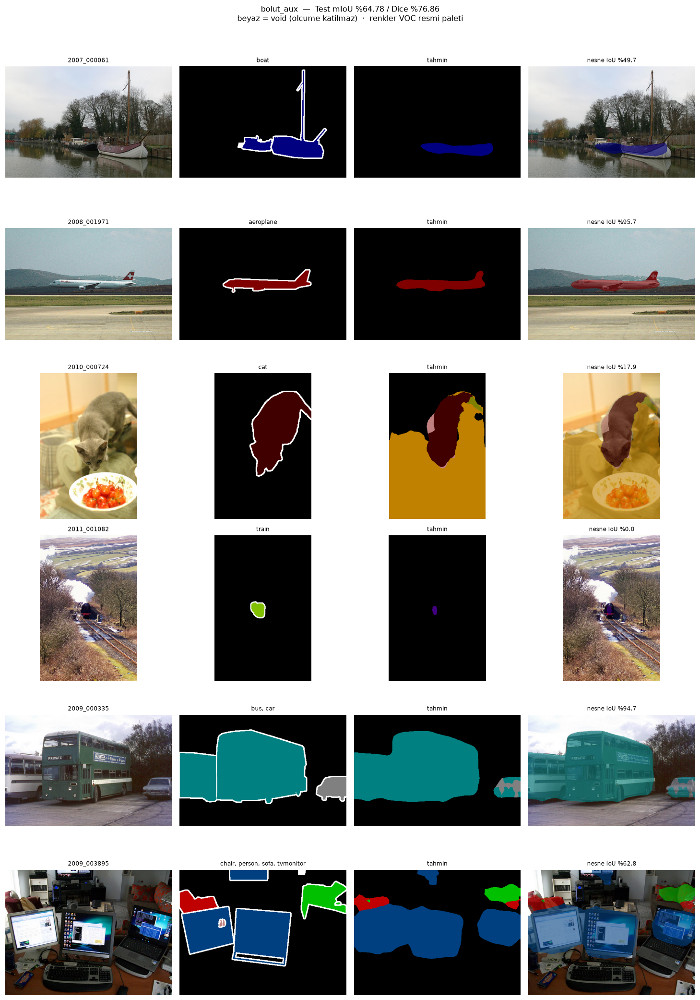

Deney Sonuçları Raporu
Görev 5 — PASCAL VOC 2012'de Nesne Tespiti ve Semantik Bölütleme
Bu rapor iki ayrı görme problemini aynı veri seti üzerinde ele alır: nesne tespiti
(Faster R-CNN) ve semantik bölütleme (DeepLabV3). Toplam 14 eğitim
yapılmıştır — tespitte 6, bölütlemede 8. Toplam süre 201,0 dakika
(RTX 4060 Laptop GPU).
Her iki problemde de baseline'dan başlanıp adım adım skor yükseltilmiştir:
tespitte %51,48 → %77,74 mAP@0,5 (+26,26 puan), bölütlemede
%56,41 → %64,78 mIoU (+8,37 puan).
Ancak bu çalışmanın asıl sonucu skor artışı değil: her iki problemde de hiç
eğitilmemiş hazır model, eğitilen en iyi modelden daha yüksek skor almıştır
(tespitte 3,26 puan, bölütlemede 10,68 puan farkla). Bu beklenen bir sonuç değildi
ve raporun merkezinde bu bulgu vardır.
Veri Seti ve Deney Kurulumu
PASCAL VOC 2012 (Kaggle: gopalbhattrai/pascal-voc-2012-dataset) —
17.125 JPEG görüntü, 20 nesne kategorisi. Aynı veri setinin iki farklı etiket katmanı var
ve Görev 5 ikisini de kullanıyor:
| Problem | Etiket kaynağı | Etiketli görüntü | Ne öğreniliyor |
|---|
| Nesne tespiti | Annotations/*.xml |
train 5.717 / val 5.823 | nesnenin sınıfı + sınırlayıcı kutusu |
| Semantik bölütleme | SegmentationClass/*.png |
train 1.464 / val 1.449 | her pikselin sınıfı |
Bölütleme etiketleri tespitin alt kümesidir — aynı görüntünün hem kutusu
hem maskesi olabilir, ama maskeli görüntü sayısı yaklaşık dörtte bir. Bu fark bölütleme
tarafının neden daha zorlandığını kısmen açıklar.
Test seti neden resmi test setinden alınmadı. VOC 2012'nin resmi test setinin
etiketleri yayınlanmaz; skor ancak VOC değerlendirme sunucusuna gönderilerek alınır.
Elimizdeki etiketli iki küme train ve val. Görev 3 ve 4'teki düzeni korumak için resmi
val listesi seed 27 ile ikiye bölünmüştür: val (iyileştirme kararları buna bakılarak
verilir) ve test (her konfigürasyon için yalnızca bir kez ölçülür). Böylece test set
leakage olmadan "karar seti / rapor seti" ayrımı korunur.
Karşılaşılan tuzak: arşivde iki VOC klasörü var. Kaggle arşivi
VOC2012_train_val/ yanında VOC2012_test/ de içerir ve ikincisinin
de Annotations/ + JPEGImages/ klasörleri vardır — ama etiketleri
boştur. Alfabetik sırada "test" önce geldiği için basit bir klasör araması önce onu
bulur ve tüm küme listeleri sessizce boş döner. Çözüm, klasörü tanırken
SegmentationClass/ varlığını da şart koşmak oldu.
Kullanılan alt kümeler
| Problem | Train | Val (karar) | Test (rapor) |
Epoch sonu takip |
|---|
| Tespit | 2.000 | 500 | 1.000 | val'in 500'ü |
| Bölütleme | 1.464 (tamamı) |
724 | 725 | 300 |
Tespitte 2.000'lik alt küme donanım kısıtından geldi: min_boyut=512 /
batch=4 ile 0,274 sn/adım ölçüldü; batch 8 denendiğinde 8,49 sn/adım'a çıktı — 8 GB VRAM
yetmiyor, sürekli takas oluyor. Bölütlemede eğitim setinin tamamı kullanılabildi çünkü
maskeli görüntü zaten yalnızca 1.464 tane.
Tüm deneylerde sabit tutulanlar
| Parametre | Tespit | Bölütleme | Gerekçe |
|---|
| Model | Faster R-CNN + ResNet50-FPN | DeepLabV3 + ResNet50 |
tek değişken kalsın diye sabit |
| Epoch | 6 | 20 | süre bütçesi |
| Batch | 4 | 8 | 8 GB VRAM sınırı |
| Optimizer | SGD (mom. 0,9) | SGD (mom. 0,9) |
torchvision referans düzeni |
| Learning rate | 0,005 | 0,01 |
referans değerlerin yarısı / DeepLab makalesi |
| Girdi boyutu | kısa kenar 512 | 320 kırpma (taban 384) |
hız / bellek dengesi |
| Seed | 27 | her deney başında yeniden kurulur |
Ölçüm: Neden Doğruluk Yetmez
Görev 4'te bu uyarı piksel doğruluğu üzerinden ölçülmüştü. Görev 5 aynı dersi
iki farklı problemde bağımsız olarak tekrar üretmiştir — ve bu kez çok daha keskin.
IoU = kesişim / birleşim · mIoU = 21 sınıf ortalaması ·
mAP@0,5 = PR eğrisi altındaki alan, 20 sınıf ortalaması
Tespitte: sınıf doğruluğu neredeyse sabit, mAP 30 puan oynuyor
Tespitte "doğruluk" standart bir metrik değildir. Anlamlı olan tek tanım şudur:
nesneyi doğru yerde bulan tahminlerin kaçının sınıfı da doğru. Bu tanımla ölçüldüğünde:
| Deney | Sınıf doğruluğu | Test mAP@0,5 | Test mAP@0,75 |
|---|
| ref_coco_egitimsiz | 94,87 | 81,00 | 60,55 |
| tespit_baseline | 93,24 | 51,48 |
15,55 |
| tespit_aug_orta | 94,52 | 77,74 | 53,97 |
| Tüm deneylerin aralığı | 93,24 – 94,87 |
51,48 – 81,00 | 15,55 – 60,55 |
Sınıf doğruluğu 1,63 puanlık bir bantta hapis, aynı deneylerde mAP@0,5 29,52 puan
oynuyor. Baseline ile referans arasında sınıf doğruluğu bakımından neredeyse hiç fark
yok (%93,24 / %94,87), ama biri diğerinin skorunun üçte ikisi kadar. Sebep basit: model
nesneyi doğru yerde bulduğunda adını da doğru koyuyor — sorun sınıflandırma değil,
nesneyi bulmak ve kutuyu oturtmak. Yalnızca doğruluk raporlansaydı bu iki model
denk görünecekti.
Bölütlemede: piksel doğruluğu %73, mIoU %7
VOC bölütlemesinde piksellerin yaklaşık %74'ü arka plandır. Bunun sonucu
bolut_scratch deneyinde uç bir örnekle görünür hale gelmiştir:
| Deney | Piksel doğruluğu | mIoU | Arka plansız mIoU |
|---|
| bolut_scratch | 73,32 |
6,99 | 3,53 |
| bolut_baseline | 90,16 | 56,41 | 54,67 |
| bolut_aux | 92,02 | 64,78 | 63,40 |
| ref_hazir_voc | 94,09 | 75,46 | 74,57 |
bolut_scratch piksel doğruluğunda %73,32 alıyor, mIoU'da %6,99.
Model neredeyse her pikseli "arka plan" diyor; arka plan zaten piksellerin %74'ü olduğu
için doğruluk yüksek görünüyor. Bu, "doğruluk yanıltıcıdır" uyarısının kitabi örneğidir:
tamamen başarısız bir model, doğruluk metriğinde çalışıyormuş gibi görünmektedir.
Görev 4'teki 4,13 / 11,47 puan farkı buna kıyasla ılımlı kalır.
Ölçüm Gürültüsü — ve Bu Raporun Kabul Ettiği Eksik
Görev 4'ün merkezinde ölçüm gürültüsü vardı: aynı konfigürasyonun üç tekrarı
0,14 / 0,95 / 2,33 puan fark vermiş, 2,33 puanlık bir eşik belirlenmiş ve bu eşiğin
altındaki hiçbir fark iyileştirme sayılmamıştı.
Görev 5'te bu ölçüm yapılamamıştır. Deney tasarımında hiçbir eğitim konfigürasyonu
iki kez koşulmadı — Görev 4'te gürültüyü bedavaya ölçmeyi sağlayan "aşama sınırında
referans satırı tekrarla" düzeni burada kurulmadı. Elde edilen tek tekrar
ref_coco_egitimsiz'in iki koşusudur ve
o eğitim içermez:
| Tekrar | Test mAP@0,5 | Test mAP@0,5:0,95 | TP |
|---|
| ref_coco_egitimsiz — 1. koşu | 81,03 | 54,67 | 2.033 |
| ref_coco_egitimsiz — 2. koşu | 81,00 | 54,65 | 2.031 |
| Fark | 0,03 | 0,02 | 2 |
Bu yalnızca
değerlendirme gürültüsüdür (veri sırası + CUDA toplama sırası) ve
0,03 puandır.
Eğitim gürültüsü bundan çok daha büyüktür — Görev 4'te aynı ayrım
0,03 değil 2,33 puandı. Dolayısıyla bu 0,03, eğitimli deneyleri karşılaştırmak için
kullanılamaz.
Sonucu: bu raporda birkaç puanlık farklar üstünlük kanıtı sayılmamıştır.
Ölçülmüş bir eşik olmadığı için Görev 4'teki gibi kesin bir sayı verilemiyor; bunun yerine
her adımda farkın büyüklüğü açıkça yazılmış ve küçük farklarda "ölçüm karar veremedi"
denmiştir. Aşağıdaki iki sonuç bu yüzden iddia edilmemektedir:
- Tespitte augmentation'ın katkısı: val +0,69, test +0,64 puan.
- Bölütlemede
orta ile guclu profil arasındaki fark: val 1,07 puan.
Buna karşılık aşağıdaki farklar herhangi bir makul gürültü eşiğinin çok üstündedir
ve güvenle yorumlanabilir: transfer learning'in tespitteki katkısı (+25,83 val),
bolut_scratch'in çöküşü (−54,30 val), sabit learning rate'in maliyeti
(−19,25 val) ve eğitimsiz referansların üstünlüğü.
BÖLÜM 1 — NESNE TESPİTİ
Model: Faster R-CNN + ResNet50-FPN. İki aşamalı dedektör — önce RPN aday bölge
önerir, sonra ROI başlığı her adayı sınıflandırıp kutusunu düzeltir. Tek aşamalı
dedektörlerden (SSD, RetinaNet, YOLO) daha yavaş ama küçük nesnelerde daha güçlü; VOC'ta
görüntü başına ortalama 2,4 nesne var ve çoğu görüntünün küçük bir bölümünü kaplıyor.
Adım 1 — Referans ve Baseline
Bu adımda iki ölçüm var ve ikisi farklı işlev görüyor:
ref_coco_egitimsiz — torchvision'ın COCO ağırlıklarıyla gelen
Faster R-CNN. VOC görüntülerini hiç görmedi, eğitim süresi 0. COCO'nun 80 sınıfı
VOC'un 20 sınıfına eşlendi. Ulaşılması zor bir tavan olarak konuldu.tespit_baseline — yalnızca ImageNet gövdesi hazır; FPN, RPN ve
ROI başlığının tamamı sıfırdan. Ölçüm sıfır noktası.
| Deney | Val mAP@0,5 | Test mAP@0,5 | mAP@0,75 |
mAP@0,5:0,95 | Precision | Recall | Ort. IoU | Süre |
|---|
| ref_coco_egitimsiz | 84,36 |
81,00 | 60,55 | 54,65 | 60,07 |
83,72 | 83,35 | 0 sn |
| tespit_baseline | 55,35 |
51,48 | 15,55 | 22,99 |
42,60 | 63,48 | 72,39 | 1.088,7 sn |
Baseline'ın sorunu sınıflandırma değil, yerelleştirme. mAP@0,5 (gevşek eşik)
farkı 29,52 puan iken mAP@0,75 (sıkı eşik) farkı 45,00 puan. Yani baseline
nesneleri kabaca doğru yerde buluyor ama kutuların kenarları tutmuyor. Ortalama IoU'nun
%83,35'ten %72,39'a düşmesi aynı şeyi söylüyor.
Bu beklenen bir sonuç: baseline'da yalnızca gövde hazır, kutu regresyonunu öğrenen
kısımların hepsi (FPN, RPN, ROI) sıfırdan. 2.000 görüntü ve 6 epoch buna yetmiyor.
Baseline hem kaçırıyor hem uyduruyor. Yanlış pozitif 2.075 (referansta 1.350),
kaçırılan 886 (referansta 395). Precision %42,60 / recall %63,48 — her iki yönde de zayıf.
en_iyi_epoch = 6, yani son epoch: model hâlâ yükselirken durduruldu
(Görev 4 baseline'ındaki 18/20 deseniyle aynı).

tespit_baseline — test setinden sabit örnekler. Aynı indeksler her
deneyde kullanıldığı için deneyler arası görsel karşılaştırma anlamlıdır.
Adım A1 — Transfer Learning
Baseline ile referans arasındaki 29,52 puanlık açığın kaynağı belli: referans COCO'da
tespit görevi için eğitilmiş, baseline yalnızca ImageNet sınıflandırma gövdesiyle
başlıyor. Bu adımda COCO ağırlıklarıyla başlanıp VOC'ta ince ayar yapılır. Tek değişken
gövdenin kaç bloğunun eğitilebilir olduğu.
| Deney | Eğitilebilir katman | Val mAP@0,5 | Test mAP@0,5 |
mAP@0,75 | Precision | Recall | Süre |
|---|
| tespit_coco_ft | 3 | 81,18 |
77,10 | 54,90 | 72,82 | 78,07 | 1.096,9 sn |
| tespit_coco_ft_katman5 | 5 (tamamı) | 79,66 | 76,17 |
53,94 | 72,56 | 77,70 | 1.478,1 sn |
Transfer learning bu çalışmanın en büyük tek kaldıracı: val +25,83 puan
(55,35 → 81,18), test +25,62 puan (51,48 → 77,10). Görev 3'te aynı bulgu 8,30 puandı,
Görev 4'te 11,61. Burada 25,83 — problem ne kadar karmaşıksa hazır ağırlığın katkısı
o kadar büyüyor.
Gövdenin tamamını açmak zarar veriyor. katman5 val'de 1,52 puan geride
ve %35 daha yavaş (1.478 sn / 1.097 sn). Görev 3'teki "yüksek learning rate hazır
ImageNet filtrelerini ilk epoch'ta bozar" bulgusunun tespit karşılığı: ne kadar çok katman
açılırsa hazır bilgiden o kadar çok kaybediliyor. Ayrıca katman5'in en iyi
epoch'u 5, yani 6. epoch'ta gerilemiş — aşırı esnekliğin işareti.
Not: 1,52 puanlık fark ölçülmüş bir eşiğin üstünde olduğu gösterilemez. Ancak süre farkı
(+%35) tek başına katman5'i elemeye yeter — skor eşitken maliyet karar verir.
Adım A2 — Augmentation
A1'in kazananı (tespit_coco_ft, 3 eğitilebilir katman) sabitlenir, üzerine
augmentation eklenir.
| Deney | Profil | Val mAP@0,5 | Test mAP@0,5 |
Precision | Recall | TP | FP | FN |
|---|
| tespit_aug_orta |
çevirme + renk + ölçekleme | 81,87 | 77,74 |
68,91 | 80,05 | 1.942 | 876 | 484 |
| tespit_aug_hafif | yatay çevirme | 81,30 |
78,11 | 69,21 | 80,05 | 1.942 | 864 | 484 |
| tespit_coco_ft (A1, referans) |
yok | 81,18 | 77,10 | 72,82 | 78,07 |
1.894 | 707 | 532 |
Üç konfigürasyon 0,69 puanlık bir aralıkta (val). Ölçüm karar veremedi.
Görev 4'ün eşiği (2,33) burada geçerli olsaydı bu farkların tamamı gürültü sayılırdı.
Görev 5'te eşik ölçülmediği için kesin bir şey söylenemiyor, ancak 0,69 puanın bir
iyileştirme kanıtı olmadığı açıktır. tespit_aug_orta validation'a göre
seçilmiştir; bu bir kural gereğidir, ölçülmüş bir üstünlük değildir.
Ortalama skor sabit kalırken hata profili değişti — asıl bulgu burada.
Augmentation precision'ı düşürüp recall'ü yükseltti: %72,82 → %68,91 precision,
%78,07 → %80,05 recall. Somut olarak: 48 nesne daha bulundu (TP 1.894 → 1.942,
FN 532 → 484) ama 169 yanlış pozitif eklendi (FP 707 → 876). Model daha cesur
davranıyor.
Bu, Görev 4'teki "ortalama skor loss'un ne yaptığını göstermez, hata profili gösterir"
bulgusunun tespit karşılığıdır. mAP neredeyse değişmedi çünkü kazanılan recall ile
kaybedilen precision birbirini götürdü.
Tespit — Nihai Sonuç
Faster R-CNN + ResNet50-FPN | COCO pretrained, 3 eğitilebilir katman
augmentation: çevirme + renk oynaması + ölçekleme | 6 epoch | 953,7 sn
| Metrik | Baseline | Nihai | Kazanç |
Eğitimsiz referans | Referansa fark |
|---|
| Test mAP@0,5 | 51,48 | 77,74 |
+26,26 | 81,00 | −3,26 |
| Test mAP@0,75 | 15,55 | 53,97 | +38,42 |
60,55 | −6,58 |
| Test mAP@0,5:0,95 | 22,99 | 50,24 | +27,25 |
54,65 | −4,41 |
| Precision | 42,60 | 68,91 | +26,31 |
60,07 | +8,84 |
| Recall | 63,48 | 80,05 | +16,57 |
83,72 | −3,67 |
| Sınıf doğruluğu | 93,24 | 94,52 |
+1,28 | 94,87 | −0,35 |

tespit_aug_orta — baseline ile aynı örnekler. Kutuların hem sayısı
hem oturması belirgin biçimde iyileşmiştir.
BÖLÜM 2 — SEMANTİK BÖLÜTLEME
Model: DeepLabV3 + ResNet50. Görev 4'te U-Net ailesi denenmiş ve DeepLabV3+
orada sonuncu olmuştu — su kütlelerinin sınırları için skip bağlantısı kritikti.
VOC farklı bir problem: 21 sınıf, çok nesneli sahneler, geniş ölçek değişimi. Atrous
Spatial Pyramid Pooling (ASPP) tam da bunun için tasarlandı — aynı katmanda farklı
genişlemelerde konvolüsyon uygulayıp hem küçük hem büyük nesneyi aynı anda görür.
Bu rapor "DeepLabV3 VOC'ta iyidir" iddiasını doğrudan test etmemektedir.
Görev 5'te tek bir bölütleme mimarisi kullanıldı; karşılaştırmalı bir mimari taraması
yapılmadı. Görev 4 ile karşılaştırma yalnızca farklı veri setlerinde farklı davranıyor
gözlemi düzeyindedir, kontrollü bir deney değildir.
VOC bölütlemesinde üç tuzak
- void (255) pikseller. Nesne sınırlarındaki belirsiz şeritte VOC 255 etiketi
kullanır. Bunlar ne arka plan ne nesne — loss'ta ve metrikte yok sayılmalıdır
(
ignore_index=255). Sayılsaydı model imkânsız bir hedefi öğrenmeye çalışır
ve mIoU yapay olarak düşerdi.
- Arka plan bir sınıf. 21 sınıfın biri arka plan ve piksellerin ~%74'ü o.
mIoU'yu 21 sınıf üzerinden ortalamak literatürün standardıdır, ama arka plan dahil
edildiğinde skor olduğundan iyi görünür; bu yüzden arka plansız mIoU da ayrıca
kaydedilmiştir.
- Maske PNG'leri paletli (mode "P").
np.array(Image.open(...))
doğrudan sınıf indekslerini verir. convert("RGB") çağırmak etiketleri
renklere dönüştürür ve sessizce bozar.
Adım 1 — Referans ve Baseline
| Deney | Val mIoU | Test mIoU | Arka plansız |
Piksel doğr. | Train mIoU | Overfit farkı | Süre |
|---|
| ref_hazir_voc | 75,88 | 75,46 |
74,57 | 94,09 | 79,96 | +4,08 | 0 sn |
| bolut_baseline | 54,06 |
56,41 | 54,67 | 90,16 | 90,71 |
+36,66 | 890,9 sn |
Görev 4'ün tam tersi bir baseline: burada ezber var, hem de çok.
Train mIoU %90,71, validation %54,06 — 36,66 puanlık overfit farkı. Görev 4'ün
baseline'ında bu fark +0,15'ti (train, test'in bile altındaydı) ve orada
augmentation hiçbir şey değiştirmemişti.
Bu ölçüm A1'in sonucunu baştan haber vermektedir: kırılacak gerçek bir ezber var,
dolayısıyla augmentation'ın kıracak bir şeyi de var. Görev 4'te tam tersi geçerliydi.
Adım A1 — Augmentation
| Deney | Profil | Val mIoU | Test mIoU |
Train mIoU | Overfit farkı | Sınıf doğr. |
|---|
| bolut_aug_guclu |
ölçekleme + kırpma + çevirme + renk | 62,00 | 62,20 |
81,11 | +19,11 | 76,39 |
| bolut_aug_orta |
ölçekleme 0,5×–1,5× + kırpma + çevirme | 60,93 | 62,35 |
81,45 | +20,52 | 76,76 |
| bolut_aug_hafif | yatay çevirme | 55,51 |
58,82 | 87,98 | +32,48 | 70,38 |
| bolut_baseline (referans) |
yok | 54,06 | 56,41 | 90,71 |
+36,66 | 67,25 |
Görev 4'ün augmentation teşhisi burada doğrulanmıştır. Görev 4 raporu şunu yazmıştı:
"augmentation'ın klasik işi ezberi kırmaktır, ancak bu modelde kırılacak ezber yoktu."
Burada ezber vardı ve augmentation tam da beklendiği gibi davrandı:
Overfit farkı +36,66 → +19,11 (neredeyse yarıya indi) ve test mIoU +5,94 puan
yükseldi (56,41 → 62,35). Aynı araç, farklı hastalık, farklı sonuç. Bu, Görev 4'ün
"aynı reçete farklı hastalığa uygulanınca işe yaramıyor" bulgusunun karşı yönden
doğrulanmasıdır.
Augmentation'ın gücü ölçeklemede, çevirmede değil. hafif profil yalnızca
yatay çevirme içerir ve baseline'a göre kazancı 2,41 puan. Ölçekleme + kırpma eklendiğinde
(orta) kazanç 5,94 puana çıkıyor. VOC'ta nesneler çok farklı ölçeklerde
göründüğü için ölçek augmentasyonu doğrudan problemin kendisine dokunuyor.
Metodolojik sapma — açıkça belirtilmelidir. Validation'a göre kazanan
bolut_aug_guclu'dur (62,00 / 60,93), ancak A2 adımı orta profili
sabitlenerek koşulmuştur. Aradaki fark 1,07 puandır ve ölçülmüş bir gürültü eşiği
olmadığı için anlamlı olduğu gösterilemez; ayrıca orta test'te öndedir
(62,35 / 62,20) ve daha ucuzdur. Yine de kuralın harfiyen uygulanmadığı bir yerdir
ve raporda gizlenmemiştir. Doğru davranış, ya guclu ile devam etmek ya da
gürültü eşiğini ölçüp farkın anlamsız olduğunu göstermekti.
Adım A2 — Eğitim Düzeni
Augmentation profili sabitlenir (orta); bu adımda modelin kendisi değil
nasıl eğitildiği değişir. Üç soru sorulur.
| Deney | Ne değişiyor | Val mIoU | Test mIoU |
Arka plansız | Piksel doğr. | Overfit |
|---|
| bolut_aux |
yardımcı kayıp açık (ağırlık 0,4) | 66,51 |
64,78 | 63,40 | 92,02 | +19,36 |
| bolut_aug_orta (A1, referans) |
— | 60,93 | 62,35 | 60,92 | 90,79 | +20,52 |
| bolut_sabit_lr |
poly çizelge yerine sabit lr | 41,68 |
44,68 | 42,54 | 86,40 | +25,72 |
| bolut_scratch |
hazır ağırlık yok, gövde de sıfırdan | 6,63 |
6,99 | 3,53 | 73,32 | +1,79 |
bolut_scratch tamamen çöktü: mIoU %6,99. Görev 4'te sıfırdan eğitilen
resnet34 hiç değilse %69,94 alıyordu — burada ImageNet ağırlığı olmadan 1.464 görüntüde
21 sınıf öğrenmek imkânsız. Epoch geçmişi bunu doğruluyor: 1. epoch %3,67, 20. epoch
%6,55 — model hiçbir zaman öğrenmeye başlamadı.
"Pretrained ağırlık opsiyonel değildir" bulgusunun bu çalışmadaki en sert versiyonu.
Görev 2'nin "büyük model her zaman kazanmıyor", Görev 4'ün "pretrained olmadan büyük
mimari dezavantaj" bulgularının uç noktası: pretrained olmadan model hiç çalışmıyor.
Learning rate çizelgesi bölütlemede belirleyici: −19,25 puan (val).
bolut_sabit_lr yalnızca poly azaltmayı kaldırıyor ve skor 60,93'ten 41,68'e
düşüyor. Epoch geçmişi neden olduğunu gösteriyor: 5. epoch'ta %35,16'ya çıkıyor, 10.
epoch'ta %30,99'a geriliyor — sabit lr 0,01 ile SGD hiçbir zaman oturmuyor,
optimum etrafında salınıyor.
Görev 3'te OneCycle / AdamW gibi düzen değişiklikleri puan ondalıklarıyla oynuyordu.
Burada tek başına en büyük ikinci etki. Eğitim düzeninin önemi probleme bağlıdır ve
varsayılamaz.
Yardımcı kayıp işe yaradı: val +5,58, test +2,43 puan. DeepLabV3'ün ara katmanına
eklenen ikinci sınıflandırma başlığı (ağırlık 0,4), gradyanın ağın derinlerine daha
doğrudan ulaşmasını sağlıyor. Sınıf doğruluğu neredeyse değişmezken (76,76 → 76,71)
mIoU'nun yükselmesi, kazancın sınır kalitesinden geldiğini gösteriyor.
Bölütleme — Nihai Sonuç
DeepLabV3 + ResNet50 | ImageNet pretrained gövde | yardımcı kayıp açık
augmentation: ölçekleme 0,5×–1,5× + kırpma + çevirme | 20 epoch | 954,8 sn
| Metrik | Baseline | Nihai | Kazanç |
Eğitimsiz referans | Referansa fark |
|---|
| Test mIoU | 56,41 | 64,78 |
+8,37 | 75,46 | −10,68 |
| Test Dice | 70,32 | 76,86 | +6,54 |
85,01 | −8,15 |
| Arka plansız mIoU | 54,67 | 63,40 | +8,73 |
74,57 | −11,17 |
| Sınıf doğruluğu | 67,25 | 76,71 | +9,46 |
87,91 | −11,20 |
| Piksel doğruluğu | 90,16 | 92,02 |
+1,86 | 94,09 | −2,07 |
| Overfit farkı | +36,66 | +19,36 |
−17,30 | +4,08 | — |
Son iki satır yine "doğruluk yetmez"in kanıtı. mIoU 8,37 puan yükselirken piksel
doğruluğu yalnızca 1,86 puan yükselmiştir — iyileştirmenin yaklaşık beşte
dördü doğruluk metriğinde görünmemektedir. Görev 4'te bu oran üçte ikiydi; burada
arka plan oranı daha yüksek olduğu için gizleme etkisi daha güçlü.

bolut_aux — nihai bölütleme modeli. Baseline görseliyle
(gorseller/bolutleme/baseline/) karşılaştırıldığında sınıf karışıklıklarının
ve sınır bulanıklığının azaldığı görülür.
İki Problemin Ortak Bulgusu: Eğitimsiz Referans Kazandı
Bu, Görev 5'in en önemli sonucudur ve iki bağımsız problemde de aynı yönde çıkmıştır.
| Problem | Metrik | Baseline | En iyi eğitilen |
Eğitimsiz referans | Referansın üstünlüğü | Referansın eğitim süresi |
|---|
| Tespit | mAP@0,5 | 51,48 | 77,74 | 81,00 |
+3,26 | 0 sn |
| Bölütleme | mIoU | 56,41 | 64,78 | 75,46 |
+10,68 | 0 sn |
Tespitte bu sonuç özellikle çarpıcıdır, çünkü orada karşılaştırma adildir.
tespit_coco_ft zaten COCO ağırlıklarıyla başladı ve VOC'ta 6 epoch
eğitildi. Sonuç: ağırlıklara hiç dokunmamaktan daha kötü (77,10 / 81,00).
Yani 2.000 görüntülük bir alt kümede yapılan ince ayar, güçlü bir dedektörü iyileştirmedi
— bozdu.
Bölütlemede karşılaştırma daha az adildir: bolut_* deneyleri ImageNet
(yalnızca sınıflandırma) ağırlıklarıyla başlarken referans COCO+VOC bölütleme
ağırlıklarıyla gelir. Aradaki 10,68 puanlık fark kısmen bu başlangıç avantajından
kaynaklanır.
Bu bulgunun pratik anlamı. Küçük bir veri bütçesi ve kısa bir eğitim süresi varken,
göreve uygun bir hazır modeli olduğu gibi kullanmak, onu kendi verinizde ince ayar
yapmaktan daha iyi olabilir. İnce ayarın kazanç sağlaması için ya daha çok veri ya da
daha dikkatli bir eğitim düzeni (düşük lr, katman dondurma, daha çok epoch) gerekir.
Bu çalışma bu eşiğin nerede olduğunu ölçmemiştir; yalnızca mevcut bütçenin
altında kaldığını göstermiştir.
Yakınsama
| Deney | Epoch 1 | Epoch 5 | Epoch 10 | Son epoch |
Yorum |
|---|
| tespit_baseline | 9,42 | 54,24 | — |
55,35 | sıfırdan başlıyor, 6 epoch yetmiyor |
| tespit_coco_ft | 72,84 | 80,96 |
— | 81,18 | 1. epoch'ta baseline'ın tavanının üstünde |
| bolut_scratch | 3,67 | 3,94 | 4,41 |
6,55 | hiç öğrenmeye başlamadı |
| bolut_sabit_lr | 6,92 | 35,16 |
30,99 | 38,80 | 10. epoch'ta geriledi |
| bolut_aux | 10,14 | 30,23 | 44,20 |
63,97 | son epoch'a kadar yükseliyor |
tespit_coco_ft 1. epoch sonunda %72,84 aldı — tespit_baseline'ın
6 epoch sonunda ulaştığı seviyenin (%55,35) 17 puan üstünde. Görev 4'te aynı gözlem
yapılmıştı (pretrained model 1. epoch'ta sıfırdan modelin 20. epoch'una eşit). Transfer
learning yalnızca tavanı değil, yakınsama hızını da değiştiriyor.
Bölütleme deneylerinin çoğu hâlâ yükselirken durduruldu. bolut_aux'un
en iyi epoch'u 20/20, bolut_aug_*'ların 19/20. Epoch bütçesi bağlayıcıydı;
daha uzun eğitim mutlak skorları yükseltebilir. Adımlar arası karşılaştırma bundan
etkilenmez çünkü bütçe tüm deneylerde aynıdır.
Hangi Sınıflar Zor
Her iki problemde de sınıf bazlı sonuçlar kaydedilmiştir
(sinif_bazli_tespit.csv, sinif_bazli_bolutleme.csv).
Zorlanılan sınıflar iki problemde de büyük ölçüde aynıdır.
| Problem | En zor 4 sınıf | En kolay 4 sınıf |
|---|
| Tespit (AP@0,5, nihai model) |
pottedplant 48,4 · boat 52,6 · diningtable 64,2 · chair 68,2 |
aeroplane 90,6 · cat 90,4 · bicycle 90,0 · person 87,8 |
| Bölütleme (IoU, nihai model) |
chair 18,8 · pottedplant 36,8 · cow 39,4 · sofa 40,4 |
arkaplan 92,3 · bus 87,9 · aeroplane 84,1 · cat 80,9 |
Zorluk sınıfın kendisinden değil, geometrisinden geliyor. Her iki listede de aynı
sınıflar zorlanıyor:
pottedplant,
chair,
diningtable,
sofa,
boat. Ortak özellikleri:
- İnce ve delikli yapı (sandalye bacakları, saksı bitkisinin yaprakları) —
düşük çözünürlükte kayboluyor.
- Birbirini kapatan sahneler (masa + sandalye + kanepe genelde aynı odada,
üst üste) — sınırlar belirsiz.
- Tanımı belirsiz sınırlar (masanın nerede bitip sandalyenin başladığı).
chair bölütlemede %18,84 IoU ile en düşük sınıf; aynı sınıf tespitte %68,18
alıyor.
Kutuyla bulmak kolay, pikselini çizmek zor — iki problemin zorluk profilinin
nerede ayrıştığını gösteriyor.
Referansın da zorlandığı sınıflar aynı. ref_hazir_voc'ta en düşük
sınıflar bicycle (38,15), chair (47,23), sofa (56,53) — yani bu zorluk modele değil
probleme ait. Eğitimle kapatılabilecek bir açık değil.
Tüm Deneyler
Nesne tespiti
| Deney | Aşama | Val mAP@0,5 | Test mAP@0,5 |
mAP@0,75 | mAP@0,5:0,95 | Prec. | Recall | F1 |
Sınıf doğr. | Ort. IoU | Süre |
|---|
| ref_coco_egitimsiz | Referans | 84,36 |
81,00 | 60,55 | 54,65 | 60,07 | 83,72 | 69,95 |
94,87 | 83,35 | 0,0 |
| tespit_baseline | Baseline | 55,35 |
51,48 | 15,55 | 22,99 | 42,60 | 63,48 | 50,98 |
93,24 | 72,39 | 1.088,7 |
| tespit_coco_ft | A1 Transfer | 81,18 |
77,10 | 54,90 | 50,01 | 72,82 | 78,07 | 75,35 |
94,20 | 83,00 | 1.096,9 |
| tespit_coco_ft_katman5 | A1 Transfer | 79,66 | 76,17 |
53,94 | 48,92 | 72,56 | 77,70 | 75,04 | 94,65 |
82,49 | 1.478,1 |
| tespit_aug_hafif | A2 Aug | 81,30 | 78,11 |
55,03 | 50,28 | 69,21 | 80,05 | 74,24 | 94,80 |
82,76 | 1.083,3 |
| tespit_aug_orta | A2 Aug |
81,87 | 77,74 | 53,97 | 50,24 | 68,91 |
80,05 | 74,07 | 94,52 | 82,81 | 953,7 |
Semantik bölütleme
| Deney | Aşama | Val mIoU | Test mIoU | Test Dice |
Arka plansız | Piksel doğr. | Sınıf doğr. | fwIoU |
Train mIoU | Overfit | Süre |
|---|
| ref_hazir_voc | Referans | 75,88 |
75,46 | 85,01 | 74,57 | 94,09 | 87,91 | 89,68 |
79,96 | +4,08 | 0,0 |
| bolut_baseline | Baseline | 54,06 |
56,41 | 70,32 | 54,67 | 90,16 | 67,25 | 83,28 |
90,71 | +36,66 | 890,9 |
| bolut_aug_hafif | A1 Aug | 55,51 | 58,82 |
72,47 | 57,19 | 90,67 | 70,38 | 84,03 | 87,98 |
+32,48 | 891,5 |
| bolut_aug_orta | A1 Aug | 60,93 |
62,35 | 75,45 | 60,92 | 90,79 | 76,76 | 84,51 |
81,45 | +20,52 | 887,5 |
| bolut_aug_guclu | A1 Aug | 62,00 |
62,20 | 75,04 | 60,74 | 90,89 | 76,39 | 84,83 |
81,11 | +19,11 | 906,6 |
| bolut_scratch | A2 Düzen | 6,63 |
6,99 | 9,98 | 3,53 | 73,32 | 9,85 | 57,93 |
8,41 | +1,79 | 920,4 |
| bolut_aux | A2 Düzen | 66,51 |
64,78 | 76,86 | 63,40 | 92,02 |
76,71 | 86,39 | 85,87 | +19,36 | 954,8 |
| bolut_sabit_lr | A2 Düzen | 41,68 |
44,68 | 59,15 | 42,54 | 86,40 | 55,37 | 76,97 |
67,40 | +25,72 | 905,0 |
14 deney, toplam 12.057 saniye = 201,0 dakika GPU süresi
(RTX 4060 Laptop, 8 GB) — tespit 95,0 dk, bölütleme 105,9 dk. Ham sonuçlar
sonuclar_tespit.csv ve sonuclar_bolutleme.csv, sınıf bazlı
sonuçlar sinif_bazli_*.csv, epoch geçmişleri epoch_gecmisi_*.csv,
görseller gorseller/{tespit,bolutleme}/{aşama}/ altındadır.
Bulgular
- Her iki problemde de eğitimsiz hazır model, eğitilen en iyi modeli geçti.
Tespitte 3,26, bölütlemede 10,68 puan farkla — ve referansların eğitim süresi 0.
Tespitte karşılaştırma adildir (ikisi de COCO ağırlıklarıyla başlar), dolayısıyla sonuç
nettir: 2.000 görüntülük bir alt kümede 6 epoch ince ayar, güçlü bir dedektörü
iyileştirmedi, bozdu.
- Doğruluk metriği iki problemde de yanılttı — biri uç örnek. Tespitte sınıf
doğruluğu 1,63 puanlık bir bantta kalırken mAP@0,5 29,52 puan oynadı. Bölütlemede
bolut_scratch piksel doğruluğunda %73,32 alırken mIoU'da %6,99 aldı:
tamamen başarısız bir model, doğruluk metriğinde çalışıyormuş gibi göründü.
- Görev 4'ün augmentation teşhisi karşı yönden doğrulandı. Görev 4'te
augmentation işe yaramamıştı çünkü baseline'da overfit yoktu (+0,15). Burada overfit
+36,66'ydı ve augmentation onu +19,11'e indirip skoru 5,94 puan yükseltti.
Aynı araç, farklı hastalık, farklı sonuç.
- Pretrained ağırlık opsiyonel değil —
bolut_scratch hiç çalışmadı.
mIoU %6,99, 20 epoch boyunca öğrenmeye başlamadı. Görev 4'te sıfırdan resnet34 en azından
%69,94 alıyordu; 1.464 görüntüde 21 sınıf için sıfırdan eğitim tamamen imkânsız.
- Transfer learning'in katkısı problem karmaşıklığıyla büyüyor. Görev 3'te
8,30 puan, Görev 4'te 11,61, Görev 5 tespitte 25,83. Ayrıca yakınsama hızını da
değiştiriyor:
tespit_coco_ft 1. epoch'ta baseline'ın 6 epoch'luk tavanının
17 puan üstünde.
- Fazla katman açmak zarar veriyor. Gövdenin tamamı eğitilebilir yapıldığında
(
katman5) val 1,52 puan düştü ve süre %35 arttı. Görev 3'ün "yüksek lr hazır
filtreleri bozar" bulgusunun tespit karşılığı.
- Learning rate çizelgesi bölütlemede en büyük ikinci etki: −19,25 puan.
Sabit lr ile model 10. epoch'ta geriledi. Görev 3'te aynı tür değişiklikler puan
ondalıklarıyla oynuyordu — eğitim düzeninin önemi probleme bağlıdır ve varsayılamaz.
- Augmentation ortalama skoru değiştirmeden hata profilini değiştirebilir.
Tespitte mAP neredeyse sabit kalırken 48 nesne daha bulundu (recall +1,98) ve 169 yanlış
pozitif eklendi (precision −3,91). Ortalamaya bakan biri "hiçbir şey olmadı" derdi.
- Zorlanılan sınıflar iki problemde de aynı ve zorluk geometriden geliyor.
pottedplant, chair, diningtable, sofa, boat — ince/delikli yapı, birbirini kapatan
sahneler, tanımı belirsiz sınırlar. Referans model de aynı sınıflarda zorlanıyor, yani
bu açık eğitimle kapatılabilecek bir açık değil.
- Ölçüm gürültüsü ölçülmedi ve bu raporun kabul edilmiş eksiğidir. Görev 4'te
gürültü üç kez ölçülmüş, 2,33 puanlık eşik tüm sonuçları yeniden okutmuştu. Görev 5'te
hiçbir eğitim konfigürasyonu tekrarlanmadı. Sonuç olarak küçük farklar (tespitte
augmentation +0,69, bölütlemede orta/guclu 1,07) iddia edilememektedir.
Sınırlılıklar
- Ölçüm gürültüsü ölçülmedi. Görev 4'ün en önemli metodolojik kazanımı burada
tekrarlanmadı. Elde edilen tek tekrar eğitim içermeyen referansındır (0,03 puan) ve
eğitimli deneyleri karşılaştırmak için kullanılamaz. Manşet bulgular (eğitimsiz referansın
üstünlüğü, transfer learning'in +25,83'ü,
bolut_scratch'in çöküşü,
sabit lr'nin −19,25'i) herhangi bir makul eşiğin çok üstünde olduğu için bundan
etkilenmez; adım içi küçük farklar ise yorumlanmamıştır.
- A2 bölütleme, validation kazananıyla koşulmadı. A1'in validation kazananı
bolut_aug_guclu (62,00) iken A2 orta profiliyle (60,93)
sabitlenmiştir. Fark 1,07 puandır ve anlamlı olduğu gösterilemez, ancak kural harfiyen
uygulanmamıştır.
- Tespitte eğitim seti 2.000 görüntüyle sınırlandı. Donanım kısıtından
(8 GB VRAM, batch 4). Mevcut 5.717 görüntünün yalnızca %35'i. Bu, "ince ayar referansı
geçemedi" bulgusunun doğrudan sebebi olabilir — daha büyük bir bütçede sonuç değişebilir
ve bu test edilmemiştir.
- Epoch bütçesi bağlayıcıydı. Tespitte 6, bölütlemede 20 epoch. Bölütleme
deneylerinin çoğunda en iyi validation skoru 19–20. epoch'ta gerçekleşti; modeller hâlâ
yükselirken durduruldu.
- Tek mimari, tek seed. Her iki problemde de tek bir model ailesi kullanıldı
(Faster R-CNN, DeepLabV3); mimari karşılaştırması yapılmadı. Dolayısıyla "DeepLabV3 VOC'ta
uygundur" gibi bir iddia bu çalışmayla desteklenmemektedir. Tüm deneyler seed 27 ile
tek koşudur.
- Bölütlemede referans karşılaştırması adil değil. Referans COCO+VOC
bölütleme ağırlıklarıyla gelirken eğitilen modeller ImageNet sınıflandırma
ağırlıklarıyla başlar. 10,68 puanlık farkın ne kadarının bu başlangıç avantajından
geldiği ayrıştırılmamıştır. Tespitte böyle bir sorun yoktur.
Görev 5 — PASCAL VOC 2012 (Kaggle) · 14 deney · 201,0 dakika GPU ·
RTX 4060 Laptop GPU (8 GB) · PyTorch 2.5.1+cu124 · torchvision · albumentations 1.4.18 · seed 27